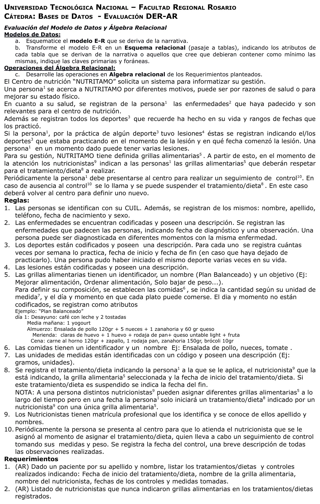

Dietas Nutritamo
1° parcial, 27/07/2024
Enunciado


Propuesta de respuesta
Respuesta no verificada. La propuso Luta Studios con inteligencia artificial y ningún docente la revisó. Puede tener errores.
a) Modelo E-R
El mín:máx pegado a una entidad dice cuántas de esa entidad le tocan a una de la otra punta, como en los DER resueltos del Drive. Tocá el dibujo para verlo en pantalla completa.
b) Pasaje a tablas
persona (cuil, nombre, apellido, telefono, fecha_nac, sexo)
CP -> cuil
enfermedad (codigo, descripcion)
CP -> codigo
diagnostico (cuil_persona, codigo_enfermedad, fecha_diagnostico, observacion)
CP -> cuil_persona, codigo_enfermedad, fecha_diagnostico
CF(cuil_persona) -> persona(cuil) NN
CF(codigo_enfermedad) -> enfermedad(codigo) NN
deporte (codigo, descripcion)
CP -> codigo
practica (cuil_persona, codigo_deporte, fecha_inicio, veces_semana, fecha_fin)
CP -> cuil_persona, codigo_deporte, fecha_inicio
CF(cuil_persona) -> persona(cuil) NN
CF(codigo_deporte) -> deporte(codigo) NN
lesion (codigo, descripcion)
CP -> codigo
lesion_persona (cuil_persona, codigo_lesion, fecha_comienzo)
CP -> cuil_persona, codigo_lesion, fecha_comienzo
CF(cuil_persona) -> persona(cuil) NN
CF(codigo_lesion) -> lesion(codigo) NN
lesion_deporte (cuil_persona, codigo_lesion, fecha_comienzo, codigo_deporte, fecha_inicio_practica)
CP -> cuil_persona, codigo_lesion, fecha_comienzo, codigo_deporte, fecha_inicio_practica
CF(cuil_persona, codigo_lesion, fecha_comienzo) -> lesion_persona(cuil_persona, codigo_lesion, fecha_comienzo) NN
CF(cuil_persona, codigo_deporte, fecha_inicio_practica) -> practica(cuil_persona, codigo_deporte, fecha_inicio) NN
grilla_alimentaria (id, nombre, objetivo)
CP -> id
comida (id, nombre)
CP -> id
unidad_medida (codigo, descripcion)
CP -> codigo
composicion (id_grilla, id_comida, dia, momento, cantidad, codigo_unidad)
CP -> id_grilla, id_comida, dia, momento
CF(id_grilla) -> grilla_alimentaria(id) NN
CF(id_comida) -> comida(id) NN
CF(codigo_unidad) -> unidad_medida(codigo) NN
nutricionista (matricula, apellido, nombres)
CP -> matricula
tratamiento (cuil_persona, fecha_inicio, fecha_fin, matricula_nutricionista, id_grilla)
CP -> cuil_persona, fecha_inicio
CF(cuil_persona) -> persona(cuil) NN
CF(matricula_nutricionista) -> nutricionista(matricula) NN
CF(id_grilla) -> grilla_alimentaria(id) NN
control (cuil_persona, fecha_inicio_tratamiento, fecha_control, peso, medidas, observaciones)
CP -> cuil_persona, fecha_inicio_tratamiento, fecha_control
CF(cuil_persona, fecha_inicio_tratamiento) -> tratamiento(cuil_persona, fecha_inicio) NNc) Álgebra relacional
1) El apellido y el nombre son los datos que te dan.
2) «Nunca» se resuelve con una diferencia.
Respuesta no verificada. Puede tener errores.
Se armó con 1° parcial, DER, pasaje a tablas y álgebra relacional. La forma sigue las resoluciones del Drive de Jusenkyo 2026, Guardería Náutica 2024 y RolePlay 2022.
Quedó en duda: El tratamiento va como entidad débil de persona por la nota de la regla 8. También se puede plantear como ternario y la tabla queda igual. Las lesiones se atan a la práctica para asegurar que sea un deporte que esa persona hizo; una lectura más simple las ata directo a deporte. El control no guarda nutricionista porque es el del tratamiento, según la regla 10. Las reglas no piden datos de la ausencia a un control, así que no se registra. En el requerimiento 1, un tratamiento sin controles no sale, porque el álgebra de estas resoluciones no usa outer join. Las fórmulas van por pasos; en las resoluciones a veces están anidadas en una sola expresión. Los valores de apellido y nombre son marcadores, porque el enunciado dice «dado un paciente».
¿Cómo te fue?
Marcá cada tema del examen.
- DERDe la narrativa al DER, en 1° parcial
- PasajePasaje a tablas, en 1° parcial
- ÁlgebraÁlgebra relacional, en 1° parcial